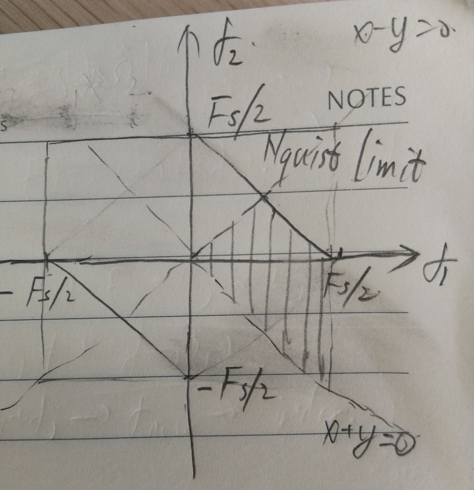
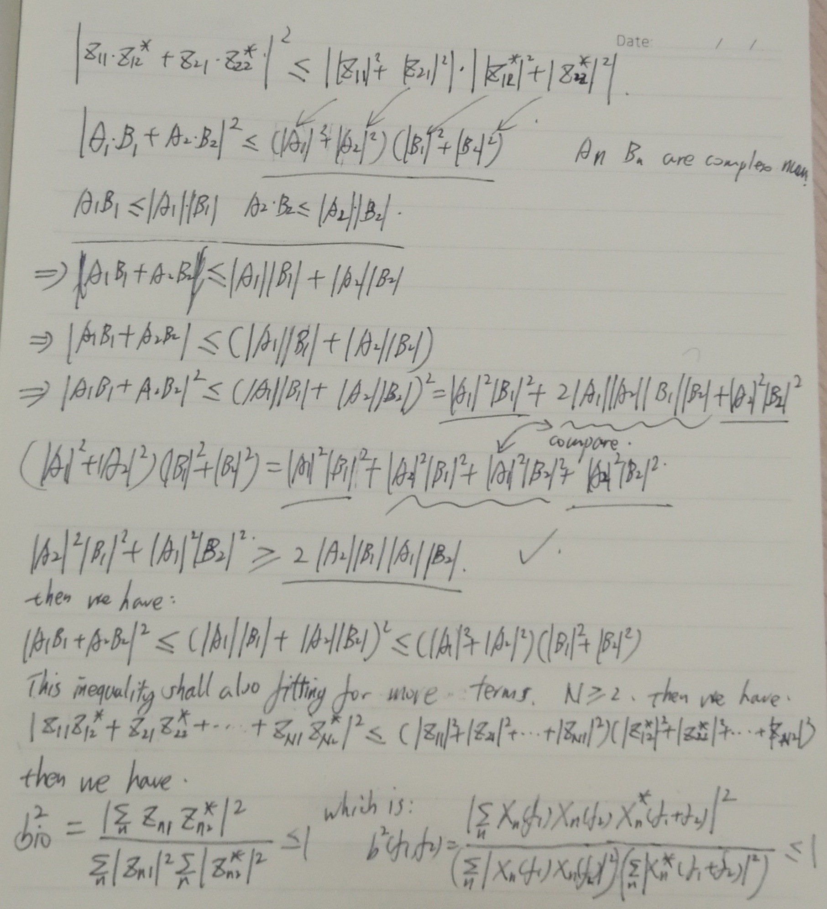
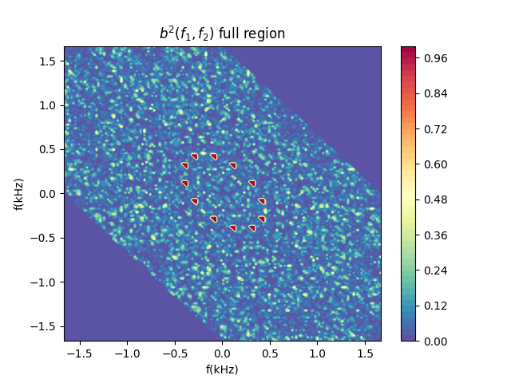
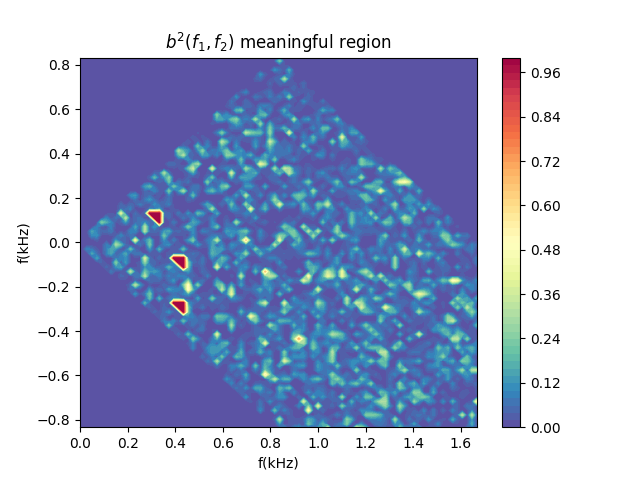

Power spectrum analysis could tell us whether there are modes in the plasma and how their frequencies evolve with time. However, linear (1st order) spectrum analysis method like Power Spectrum Density (PSD) could not tell the interaction between these modes. Higher order spectrum analysis method could help to reveal this secret. Bicoherence analysis is one of the commonly used 2nd order spectrum method.
Class of 2nd order spectrum analysis methods
Bispectrum [1]
Before conduction the coherence analysis, first we need to get bispectrum as [3]:
Here, X(f) is the Fourier components of the real signal s(t).
{width=300px}
This figure shows the meaningful region of bi-spectrum. The full plot of bi-spectrum will make up a region. Where the upper right and lower left corner of the figure are beyond the Niquist frequency limit with . Due to the symmetry of the positive and negative frequency, only a quarter of the area is non-duplicated meaningful region [5].
Bicoherence
Bicoherence is a bit difference from bispectrum. You may calculate bispectrum with only one period of signal. But to investigate Bicoherence, you have to divide you signal into many small parts. Otherwise you will got the wrong normalization.
Wrong normalization
Because for only a single pair of complex numbers, this normalization will be constant unity value:
Thus the normalization for only one signal slice without summation for many time slids is a total failure.
Correct normalization
Suppose the signal has been buffered into N periods, the related Bicoherence is defined like this [1] [7]:
Since we defined the Bicoherence, we should also prove that it is normalized with maximum value of 1 and minimum value of 0. This can be concretely proven in math. Remember the definition of Bicoherence:
To prove this, we can make some simplifications. Since the Fourier components of is a complex value, we can set: , . Then the Bicoherence becomes:
We need to prove that . For simplicity, we start from the case with N = 2, and mark the terms as: . Then the relation becomes:
From the property of complex number, we have the relation that:
, , then we have: . With this key relation, we can easily prove that the above inequality relation is correct. The minimum value appear when the the modes, f1, f2 and f3 do not satisfy the coupling relation, where the complex vector group (Fourier coefficients) are independent/vertical to the other vector group . Then bispectrum is 0 as (). The maximum value take as the two vector group are the same with . Thus the Bicoherence takes value within the range [0, 1], which means it is normalized to 1.
{width=300px}
This relation could also be extended to the case with more than 2 terms. So that, we have the inequality relation as:
Which is equivalent to:
With the coherence inside the range: .
Test data generation
When you code is ready, be careful with generation of white noise. numpy.random.random([Nt]) will introduce positive valued white noise with very strong zero frequency component. It will pose very strong interference to your coherence spectrum. White noise generated with numpy.random.randn(Nt) has rather even frequency components, which will reduce this interference. In python, the test data can be generated via these codes.
1 | if i_test == 1: |
Numerical calculation
The Bicoherence spectrum for the above data using python is like this:
{width=300px} {width=300px}
The result figures show that in the test signal data, there are coupling between f1=100 Hz, f2 = 300 Hz, f3 = 400 Hz, but there is no coupling with f4 = 1200 Hz.
Reference
[1] https://en.wikipedia.org/wiki/Bicoherence
[2] http://fusionwiki.ciemat.es/wiki/Bicoherence
[3] Shigeru INAGAKI et al. (2012). Bicoherence analysis of fluctuations with long distance correlation in toroidal plasmas. Journal of the Physical Society of Japan, 81(3), 1-5
[4] B.Ph. van Milligen et al, Wavelet bicoherence: a new turbulence analysis tool, Phys. Plasmas 2, 8 (1995) 3017
[5] Van Milligen, et al (2008). Bicoherence during confinement transitions in the TJ-II stellarator. Nuclear Fusion, 48(11).
[7] Hagihira, S., Takashina, M., Mori, T., Mashimo, T., Yoshiya, I., Many, H., & Are, E. (2001). Practical Issues in Bispectral Analysis of, 966–970.